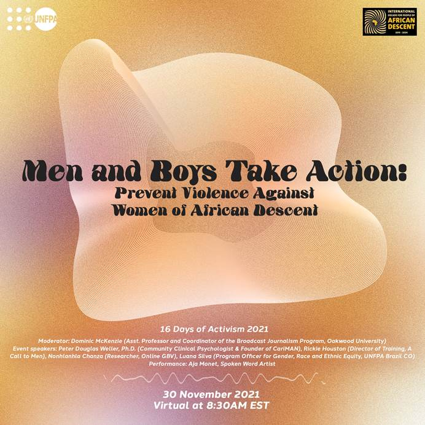

Men and Boys Take Action

Launched by the United Nations Population Fund, this conversation brought a panel of leaders and thematic experts to discuss gender-based violence (GBV) among people of African descent, technology facilitated gender-based violence (TFGBV) and strategies for engaging men and boys of African descent in ending GBV. Speakers include Founding Chair of CariMAN Peter Douglas Weller, A Call to Men Training Director Rickie Houston, South African young activist Nonhlanhla Chanza, UNFPA Brazil Focal Point Luana Silva with an artistic performance by surrealist blues poet Aja Monet.
For more information, go to their website at https://www.unfpa.org/events/unfpa-16-days-activism-against-gender-based-violence-gbv-disruptor-conversations.
Click here for their webinar.